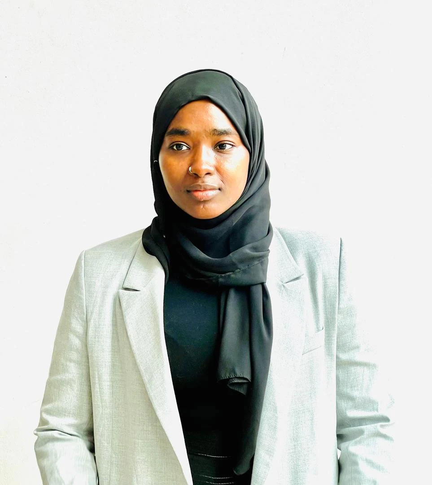
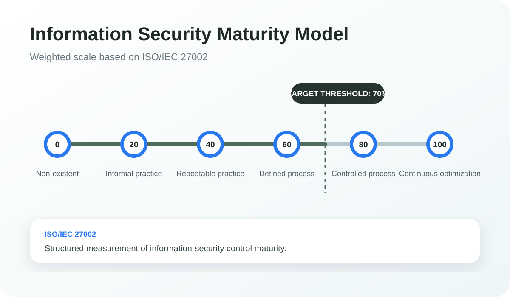
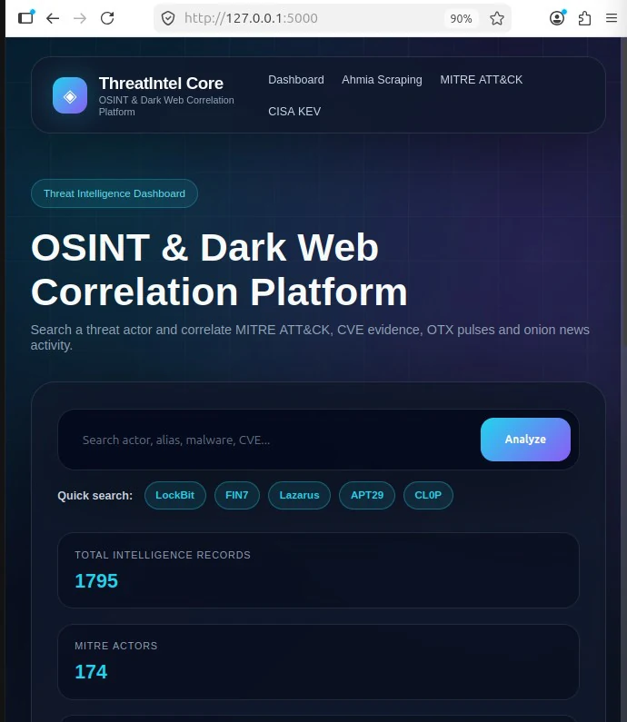
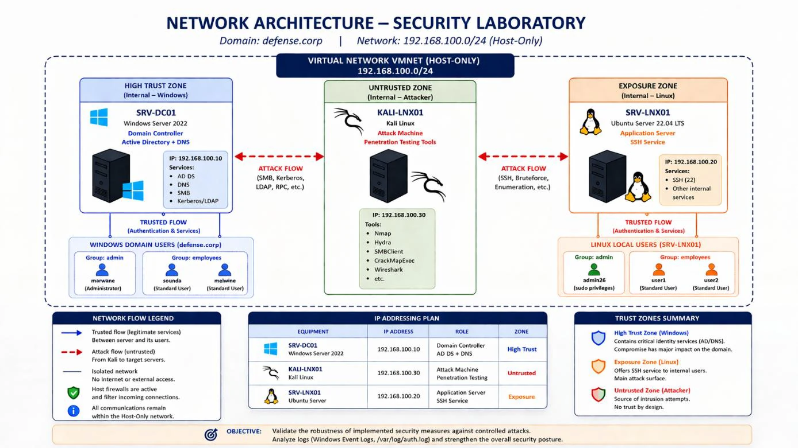
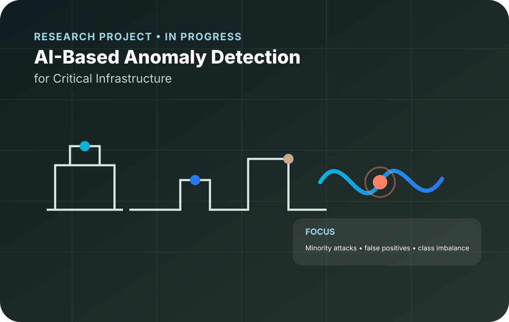

Audit & GRC
Assess controls, identify gaps and translate findings into actionable recommendations.
IT Security Audit • GRC • Information Security
Building a cybersecurity career at the intersection of security auditing, governance, risk and technical security.

Assess controls, identify gaps and translate findings into actionable recommendations.
Systems, networks, hardening, monitoring and controlled security testing.
Threat intelligence, critical infrastructure and emerging security technologies.
ABOUT ME
I am currently pursuing a Master's degree in Cybersecurity at Université Internationale de Rabat. My professional goal is to build a career in IT Security Audit and Governance, Risk & Compliance while maintaining a strong technical understanding of the systems and technologies I may be called upon to assess.
My experience in information security auditing and my academic cybersecurity projects have allowed me to explore security from both governance and technical perspectives.
My Journey
SELECTED PROJECTS
Each case study shows the challenge, my role, the approach, evidence and what I learned.

ISO/IEC 27002-Based Security Audit
Assessment of information security maturity across public institutions using an ISO/IEC 27002-based methodology, weighted evaluation criteria and corrective recommendations.

Cyber Threat Intelligence Platform
A defensive CTI platform designed to collect, correlate and present intelligence from multiple public sources.

Testing, Detection & Hardening
Design, controlled security testing, log analysis and hardening of an isolated Windows/Linux enterprise environment.

Critical Infrastructure Research Project
Ongoing supervised-learning research for critical infrastructure, focused on minority attack detection, false-positive reduction and class imbalance.
PROFESSIONAL EXPERIENCE
Information Technology Intern
IT infrastructure support, technical troubleshooting and an Active Directory / Windows Server project.
Cybersecurity Audit Intern
Participated in information security audits of six public institutions, maturity assessment and corrective recommendations.
IT Intern — Technical Team / Server Room
Basic hardware maintenance, troubleshooting, IT support and exposure to server-room operations.
TECHNICAL SKILLS
IT Security Audit · GRC · ISO/IEC 27002 · Risk Assessment · Security Monitoring
Windows Server · Active Directory · Linux · System Hardening · Network Security
CTI · MITRE ATT&CK · OSINT · Log Analysis
Python · Flask · SQL · VMware
CERTIFICATIONS & CREDENTIALS
Cybersecurity, ethical hacking and critical infrastructure protection.